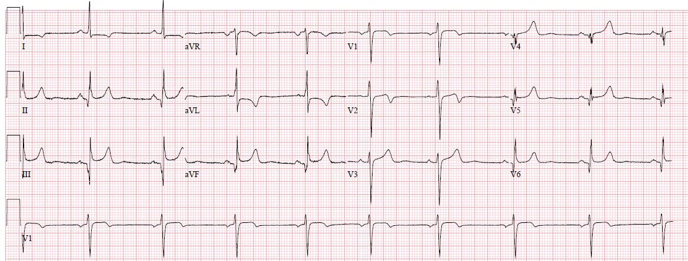
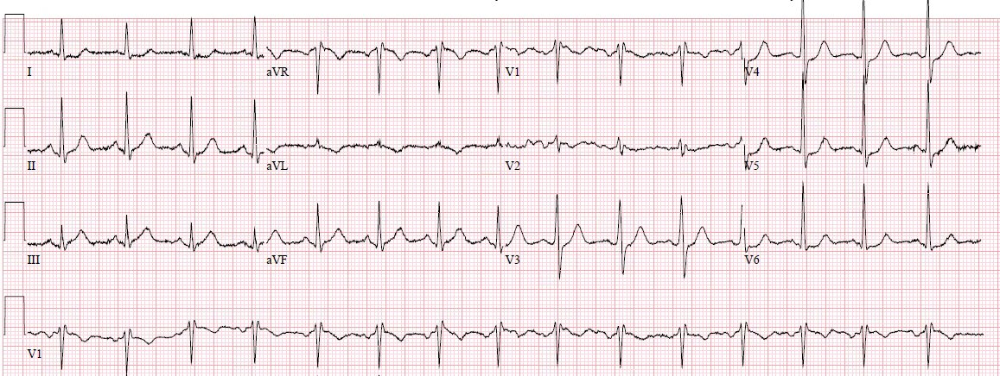
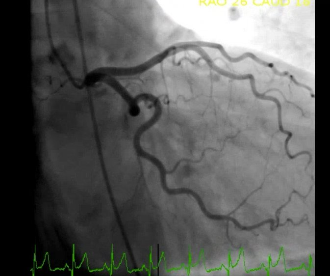
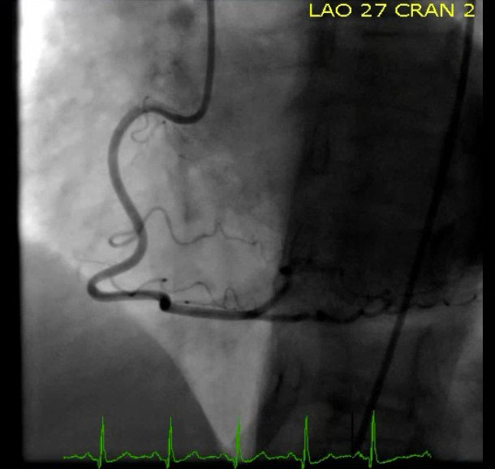
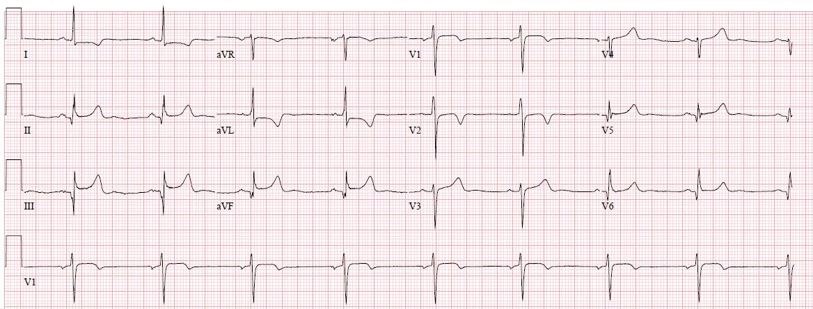
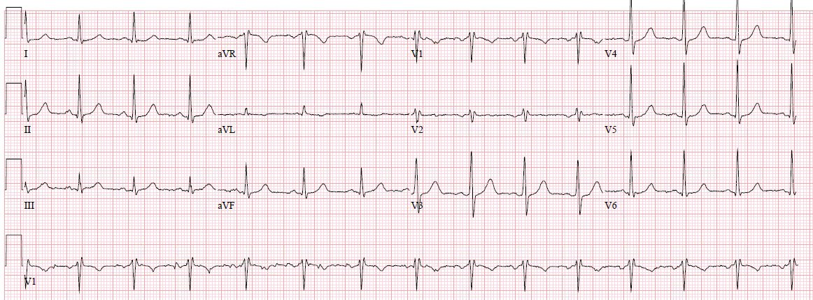
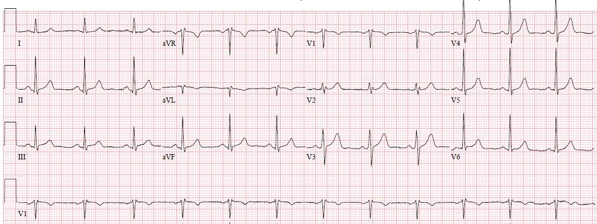
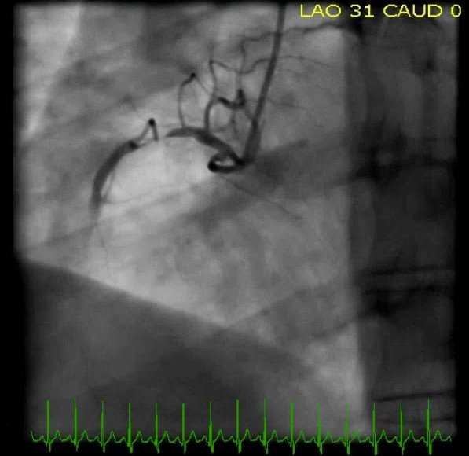
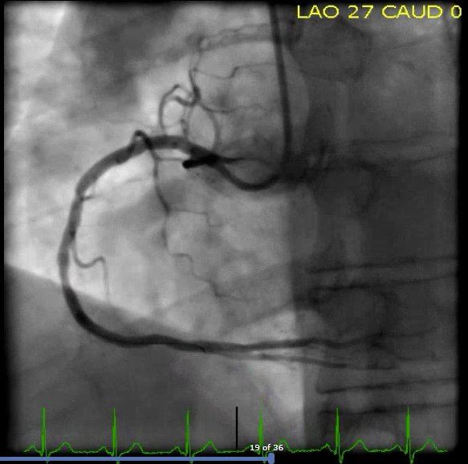

26/01/2018 — Bệnh nhân của chúng ta xứng đáng được hưởng điều tốt hơn “tiêu chuẩn STEMI”
Bản dịch tiếng Việt của bài "Our patients deserve better than the “STEMI criteria”" – Dr. Smith’s ECG Blog. Giữ nguyên toàn bộ 11 hình ảnh của bản gốc.
Tác giả: Pendell Meyers, khóa 2019 của Stony Brook, Steve Smith biên tập
Hai ca bệnh
Hãy hình dung hai bệnh nhân cùng lúc đến khoa cấp cứu (Emergency Department) của bạn với đau ngực ở mức đáng lo ngại vừa phải và các điện tâm đồ sau (không có điện tâm đồ cũ).
Bệnh nhân thứ nhất có điện tâm đồ này:


Bệnh nhân thứ hai có điện tâm đồ này:


Một trong hai người, không ai, hay cả hai, cần điều trị tái tưới máu cấp cứu?
Các hướng dẫn về STEMI (và vì thế phần lớn bác sĩ lâm sàng) đưa cho bạn một câu trả lời rõ ràng. Rõ ràng, nhưng lại hoàn toàn sai trong hai ca này.
Chúng ta hãy xem lần lượt từng ca.
Ca #1
Một phụ nữ 50 mấy tuổi đến viện vì mệt mỏi 2 tuần và cảm giác nặng ngực bắt đầu vài giờ trước khi đến. Bà cho biết đã được chẩn đoán cúm cách đây 2 tuần và hôm nay cảm thấy tệ hơn, kèm cảm giác nặng ngực mới xuất hiện, nên bà đến một cơ sở chăm sóc khẩn cấp (urgent care), nơi bà được chuyển tới khoa cấp cứu vì điện tâm đồ bất thường.
Đây là điện tâm đồ ban đầu của bà lúc đến, khi đang than nặng ngực:
Điện tâm đồ cho thấy nhịp chậm xoang với sóng Q sâu, rộng và ST chênh lên nhiều ở các chuyển đạo thành dưới, kèm ST chênh xuống soi gương và sóng T đảo ngược ở aVL và I. Cũng có sóng Q ở V4-V6 kèm ST chênh lên và sóng T tương đối lớn. Không có ST chênh xuống ở V2-V3, nhưng có sóng T hai pha ở V2.
Tôi đưa điện tâm đồ này cho Dr. Smith mà không kèm thông tin nào khác. Ông lập tức trả lời: “biến thể bình thường hoặc LVH.” Chúng tôi biết đây không phải tắc mạch vành cấp, bất chấp các đặc điểm kể trên. Tôi nghĩ các sóng Q có thể chỉ điểm nhồi máu thành dưới cũ đã hoàn tất, nhưng tôi không nghĩ hình thái này phù hợp, dù chỉ là với nhồi máu cơ tim bán cấp. Tôi cảm thấy hoàn toàn không có bằng chứng nào của tắc mạch vành cấp trên điện tâm đồ này.
Thật khó giải thích vì sao chúng ta có thể nói rằng nó trông không giống ACO dù có những đặc điểm khách quan này.
Câu trả lời tốt nhất là bạn đơn giản phải xem hàng nghìn điện tâm đồ và đối chiếu xem cái nào hóa ra là ACO và cái nào là dương tính giả. Khi làm như vậy, bạn sẽ gặp điện tâm đồ này rất nhiều lần. Vài lần đầu bạn sẽ bị đánh lừa, rồi sau đó bạn sẽ học được vì sao nó không phải ACO.
Với những ai muốn một lời giải thích kém chính xác hơn nhưng cụ thể hơn, đây là vài điểm cần cân nhắc:
1) Khi có ST chênh lên ở các chuyển đạo thành dưới kèm ST chênh xuống soi gương ở aVL, gần như đã chẩn đoán được nhồi máu thành dưới, trừ khi STE và STD này đi sau một QRS bất thường! (không LVH, không LBBB, không nhịp tạo nhịp, không WPW và không có sóng Q bất thường)
Bất kỳ khử cực bất thường nào cũng gây tái cực bất thường. Ở đây có khử cực bất thường rõ rệt với sóng Q lớn và sâu ở thành dưới. Bất kể nguyên nhân của các sóng Q này là gì, dù là nhồi máu cơ tim cũ, LVH hay biến thể bình thường, chúng đều gây tái cực bất thường. Thường điều này biểu hiện thành độ lệch ST và sóng T theo hướng ngược với bất thường lớn nhất/rộng nhất của QRS (“ngược hướng phù hợp” – appropriate discordance). Sóng Q sâu như vậy thường sẽ tạo ra ST chênh lên và thay đổi soi gương ở các chuyển đạo đối diện.
2) Một đặc điểm quan trọng khác khiến nó KHÔNG giống nhồi máu cơ tim là đoạn ST lõm cực độ, đến mức đáy sóng T hẹp, làm sóng T hơi nhọn.
3) Có một chút trát đậm nhỏ ở phần cuối phức bộ QRS ở một số chuyển đạo, phù hợp với sóng J. Đây không phải quy tắc hoàn hảo, nhưng rất hiếm gặp trong ACO thật sự.
Các bác sĩ lâm sàng đã báo động vì các dấu hiệu trên điện tâm đồ (đúng như mọi hướng dẫn hiện có khuyến cáo) và đã kích hoạt phòng thông tim (cath lab). Đây là các hình ảnh thông tim:




Thông tim của bà cho thấy các động mạch vành hoàn toàn bình thường. Bà có ba lần troponin liên tiếp âm tính. Siêu âm tim hoàn toàn bình thường, không có bằng chứng LVH hay bất kỳ rối loạn vận động thành nào. Bảng xét nghiệm virus mở rộng âm tính.
Với tôi, đây luôn là phần thú vị nhất khi xem lại hồ sơ bệnh án, khi các bác sĩ lâm sàng vật lộn để dung hòa giữa các kết quả bình thường với việc huy động nguồn lực ồ ạt đã sử dụng và một điện tâm đồ mà họ không thể tự thuyết phục mình coi là một biến thể bình thường có thể có: các bác sĩ lâm sàng kết luận bệnh nhân bị “viêm cơ tim do virus.”
Bình luận của Smith: đây KHÔNG phải viêm cơ tim. Thứ nhất, điện tâm đồ là một biến thể bình thường. Thứ hai, viêm cơ tim luôn có troponin dương tính.
Tôi thấy rất khó có khả năng (nhưng không phải là không thể) bệnh nhân bị viêm cơ tim do virus gây đau ngực và các bất thường điện tâm đồ mà không hề tăng troponin, không có rối loạn vận động thành, không có bất thường động mạch vành hay tràn dịch màng ngoài tim. Nhiều khả năng hơn hẳn là người phụ nữ kém may mắn này chỉ đơn giản có một điện tâm đồ nền biến thể bình thường trông rất đáng sợ. Trừ khi bà đến khám tại cùng cơ sở đó hoặc mang theo một bản sao điện tâm đồ của mình suốt quãng đời còn lại, vấn đề này sẽ lặp lại. Chúng tôi có nhiều ca tương tự trên blog này.
Điện tâm đồ sau thông tim của bà không thay đổi:


Ca #2
Một nam giới 50 mấy tuổi đến viện vì đau ngực từng cơn trong vài ngày qua, tái phát và nặng hơn 1 giờ trước khi đến. Lúc đến khám, mức đau của ông là 4/10 và đang giảm dần.
Đây là điện tâm đồ ban đầu của ông:
Tôi gửi điện tâm đồ này cho Dr. Smith mà không kèm thông tin lâm sàng nào và ông lập tức trả lời “nhồi máu thành dưới.”
Xin chúc mừng nếu bạn thấy được các bất thường tinh tế nhưng quan trọng ở đây. Có một mức ST chênh lên rất nhỏ ở chuyển đạo III, có ý nghĩa xét theo tỷ lệ khi phức bộ QRS nhỏ và bình thường. Sóng T lớn ở mức giới hạn so với phức bộ QRS của chúng, và nếu chỉ riêng điều này thì không thể gọi là tối cấp. Tuy nhiên, có một mức ST chênh xuống rất nhỏ và (dễ nhận thấy hơn) sóng T đảo ngược ở chuyển đạo aVL, hoàn toàn không tương xứng với phức bộ QRS rất nhỏ. Các dấu hiệu ở aVL không phù hợp với, và không giải thích được bằng, phức bộ QRS bình thường , và vì vậy xác nhận rằng các dấu hiệu tinh tế ở chuyển đạo III là mới và chỉ điểm ACO.
Cũng có ST chênh xuống ở V3-V6, tối đa ở V4. Cần mặc định điều này chỉ điểm ACO có tổn thương thành sau.
Các dấu hiệu này đã không được nhận ra. Bệnh nhân được dùng nitroglycerin và hết đau. Ông được lên kế hoạch chụp CT mạch vành để phân tầng nguy cơ thêm. Troponin lần đầu âm tính.
Các điện tâm đồ ghi lại đã được thực hiện đúng đắn, trong khi bệnh nhân hoàn toàn hết đau:




Các điện tâm đồ này cho thấy các bất thường trước đó đã hồi phục (không hoàn toàn), xác nhận đây là các dấu hiệu động và cũng xác nhận đã tái tưới máu. Cũng có thay đổi tần số tim, điều có thể ảnh hưởng đến đoạn ST và sóng T. Mạch máu đang thông vào thời điểm ghi điện tâm đồ này.
Trong khi chờ chụp CT mạch vành (CTCA), troponin T lần thứ hai của ông chuyển dương tính ở mức 0.020 ng/mL. Lịch CTCA bị hủy. Troponin lần thứ ba trả về 0.030 ng/mL.
Tại thời điểm này, ghi chép cho biết bệnh nhân bị đau ngực tái phát, được cho một liều nitroglycerin ngậm dưới lưỡi, sau đó choáng váng kèm nhịp chậm xoang tần số 30 mấy. Đáng tiếc là không có ghi nhận nào về việc ghi điện tâm đồ vào lúc này, và không có điện tâm đồ nào trong hồ sơ. Bệnh nhân được nhập khoa tim mạch với kế hoạch thông tim khẩn vào sáng hôm sau. Không đo thêm troponin nào nữa.
Sáng hôm sau, thông tim cho thấy như sau:


Tổn thương này được gọi là hẹp 99% do huyết khối ở RCA đoạn gần, tuy nhiên tôi không thấy dòng chảy nào ở phía xa. Đây có vẻ là tắc 100%. Đã tiến hành lấy huyết khối và đặt stent với kết quả chụp mạch như sau:


Sau đặt stent, giờ đây toàn bộ đường đi của RCA đã hiện rõ.
Đáng tiếc là không có thêm chỉ định troponin nào, nên không có giá trị troponin đỉnh. Siêu âm tim thực hiện 8 giờ sau thông tim không cho thấy rối loạn vận động thành nào nhưng chất lượng chưa tối ưu.
Cả hai bệnh nhân đều diễn tiến tốt.
Những bình luận tuyệt vời của Pendell Meyers:
Hai ca được chọn này cho thấy một vấn đề cực kỳ quan trọng của mô hình xử trí nhồi máu cơ tim hiện nay. Những bệnh nhân được lợi từ thông tim cấp cứu là những người bị tắc hoặc gần tắc mạch vành cấp, không đủ tuần hoàn bàng hệ, ở một phần đáng kể của cơ tim – đây là nền tảng giải phẫu của thực thể mà lẽ ra chúng ta phải gọi là “STEMI.”
Đáng tiếc là chính thuật ngữ “STEMI” và mọi hướng dẫn trong 30 năm qua đã bó hẹp tư duy của chúng ta, khiến ta nghĩ rằng tắc mạch vành cấp chỉ được chẩn đoán bằng “tiêu chuẩn STEMI.” Như chúng tôi đã chỉ ra vô số lần trên blog này, tắc mạch vành cấp (ACO) là một quá trình phức tạp và động, và không thể đơn giản hóa thành việc đo bao nhiêu milimét ST chênh lên. Nhiều nghiên cứu đã ghi nhận tiêu chuẩn STEMI bỏ sót ít nhất 25% ca ACO. Ngược lại, tất cả chúng ta đều biết tỷ lệ dương tính giả khi dùng tiêu chuẩn STEMI cao đến mức không thể chấp nhận, điều này làm bác sĩ lâm sàng xao nhãng khỏi bệnh lý nguy hiểm thật sự của bệnh nhân, gây kết luận vội vàng (premature closure), đặt bệnh nhân trước nguy cơ chịu các thủ thuật không cần thiết cùng biến chứng của chúng, cũng như huy động không cần thiết các nguồn lực khan hiếm.
Đọc điện tâm đồ bởi chuyên gia gần như chắc chắn vượt trội tiêu chuẩn STEMI về mọi mặt. Nếu muốn tiến bộ trong xử trí nhồi máu cơ tim cấp, chúng ta không có lựa chọn nào khác ngoài phá bỏ mô hình hiện nay. Thuật ngữ “STEMI” về mặt nhận thức khiến bạn nghĩ rằng chỉ có đoạn ST là quan trọng, và độ lệch đoạn ST là dấu chỉ đáng tin cậy của ACO. Để chống lại vấn đề này, chúng ta đã đặt ra các thuật ngữ khác như “STEMI tinh tế” (subtle STEMI), “tương đương STEMI” (STEMI-equivalent) hay “bán STEMI” (semi-STEMI) nhằm truyền đạt rằng còn có các dấu hiệu điện tâm đồ khác chỉ điểm cùng một bệnh lý như STEMI dương tính thật kinh điển, nhưng những thuật ngữ này chưa tạo ra thay đổi rộng rãi trong hiểu biết hay nhận thức về cách xử trí ACO tối ưu, ngoại trừ trong giới độc giả của blog này và các nguồn tương tự khác. Chúng ta đã cố quá lâu để giữ thuật ngữ “STEMI” trong tên gọi nhằm tôn vinh những đột phá của những năm 1970-1990, vốn đã đưa chúng ta vào kỷ nguyên tái tưới máu. Eugene Braunwald và những người khác đã đề xuất một khúc cầu hồn cho thuật ngữ “đau thắt ngực không ổn định,” vậy mà chúng tôi đã chỉ ra nhiều lần trên blog này rằng đau thắt ngực không ổn định vẫn tồn tại khỏe mạnh. Nhưng có lẽ đã đến lúc cần một khúc cầu hồn cho thuật ngữ “STEMI.” Dù đúng là việc dùng tiêu chuẩn STEMI trong những năm 1980 và 1990 đã được chứng minh là tốt hơn tung đồng xu để quyết định ai cần điều trị tái tưới máu cấp cứu, nó không còn là lựa chọn tốt nhất của chúng ta nữa và thực tế đang cản trở chúng ta nhận ra rằng mình đã có những lựa chọn tốt hơn. Đã quá lâu nó bó hẹp tư duy của chúng ta và ngăn cản các nghiên cứu tiếp theo chỉ ra ai thực sự được lợi từ tái tưới máu cấp cứu. Các chuyên gia thường xuyên làm tốt hơn, và hy vọng một ngày nào đó mạng nơ-ron hay các công cụ tương tự sẽ khiến tất cả chuyện này không còn đáng bàn nữa.
Bước tiếp theo khả thi là chứng minh một cách chính thức rằng các chuyên gia có thể nhận ra ACO chính xác hơn tiêu chuẩn STEMI và thực hành hiện nay. Hiện chúng tôi đang lên kế hoạch một nghiên cứu hồi cứu, được thiết kế như nghiên cứu đầu tiên trong một chuỗi nghiên cứu nhằm đánh giá liệu việc đọc điện tâm đồ bởi chuyên gia có thể mang lại kết cục tốt hơn cho bệnh nhân nhờ dự đoán chính xác hơn ai cần điều trị tái tưới máu cấp cứu hay không. Nếu các nghiên cứu hồi cứu cho thấy việc đọc điện tâm đồ bởi chuyên gia có thể đã giúp tái tưới máu ACO nhanh hơn, thì một ngày nào đó các nghiên cứu tiến cứu có thể được biện minh trong những ca mà nếu không thì vẫn còn cân bằng lâm sàng (clinical equipoise). Nếu một điện tâm đồ như vậy được chuyên gia xem xét theo cách tiến cứu, ngay tại thời điểm quyết định có tái tưới máu cấp cứu hay không, tôi tin rằng chúng ta có thể chứng minh cải thiện các kết cục quan trọng với bệnh nhân, tương quan với độ chính xác tăng lên trong phát hiện ACO và tái tưới máu cấp cứu.
Có lẽ quan trọng nhất, xin hãy nhớ rằng ACO đôi khi biểu hiện với các điện tâm đồ liên tiếp hoàn toàn bình thường. Điện tâm đồ là một dấu chỉ thay thế chính xác của ACO trong tay các chuyên gia, nhưng không bao giờ có thể hoàn hảo. Một số bệnh nhân xứng đáng được thông tim chẩn đoán ngay lập tức dù không có bất thường điện tâm đồ.
Xem bài giảng này của Dr. Smith:
“The False STEMI-NonSTEMI Dichotomy” (“Sự phân đôi sai lầm STEMI–NonSTEMI”)